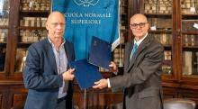
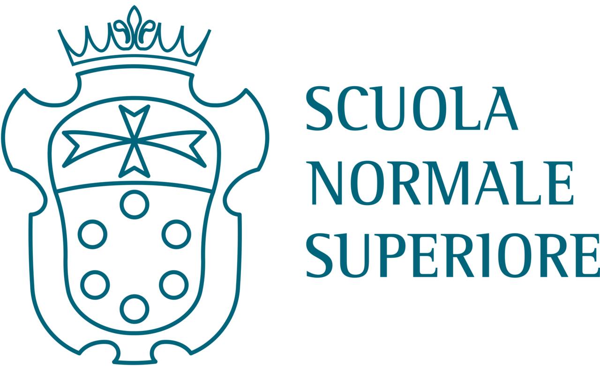

Scuola Normale and École Normale of Paris: a new agreement in a European perspective

La Scuola Normale Superiore è un istituto universitario a ordinamento speciale, il cui prestigio nel campo della ricerca e della formazione è riconosciuto a livello internazionale.
Fondata da Napoleone nel 1810, sull'esempio della École normale parigina, è la più antica Scuola universitaria italiana.
La Normale promuove la cultura, l’insegnamento e la ricerca nell’ambito delle discipline umanistiche, delle scienze matematiche e naturali, e sociali, esplorandone le interconnessioni. Le sfide scientifiche, tecnologiche e culturali trovano qui un ambiente fertile, aperto e stimolante, dove si sviluppano il sapere critico, il rigore scientifico, la curiosità intellettuale. Il talento dei suoi allievi e allieve, l’innovatività della ricerca, l’interazione con la società, sono i valori costitutivi della sua identità.
L’offerta formativa della Normale si organizza in due percorsi, il corso ordinario (un percorso parallelo ai corsi di laurea triennale e magistrale) e il corso di perfezionamento (PhD). Le attività si articolano in tre Classi: la Classe di Lettere e filosofia, la Classe di Scienze (entrambe con sede a Pisa) e la Classe di Scienze politico-sociali (con sede a Firenze). Uno dei principali scopi della Normale è individuare e coltivare il talento dei propri allievi e allieve, garantendo un insegnamento che sviluppi le capacità individuali in un contesto di convivenza, dialogo e collaborazione. Decine di ragazze e ragazzi sono selezionati ogni anno, tramite concorso, sulla sola base del merito. Entrati in Normale, sono ospitati gratuitamente nei collegi, vivono e lavorano insieme, si confrontano con studiosi e studiose di età, provenienza, formazioni diverse, sono avviati precocemente alla ricerca, vengono incentivati a fare esperienza in altre università e enti di ricerca, in Italia e all’estero.
Chi viene selezionato per il corso ordinario si impegna a seguire contemporaneamente gli insegnamenti impartiti in Normale e i corrispondenti corsi di studio dell'Università di Pisa (per la Classe di Lettere e Filosofia e la Classe di Scienze) o all’Università di Firenze (per la Classe di Scienze politico-sociali), sostenendone gli esami. Affronta dunque due percorsi formativi paralleli e complementari rispettando obblighi didattici rigorosi.
In Normale il rapporto fra docenti e allievi e allieve è estremamente virtuoso, e si aggira, al di là di piccole oscillazioni annuali, su 1:6. Questo fa della Normale una comunità di persone che vivono, studiano, crescono insieme. In un unico ambiente, infatti, convivono docenti, ricercatori, ricercatrici, studenti e studentesse, si svolgono attività didattiche e di laboratorio, si organizzano eventi aperti alla cittadinanza e iniziative sperimentali. Il percorso di studi è fatto di esperienze, ricerche, approfondimenti, momenti di intuito, e le capacità individuali progrediscono attraverso la condivisione.